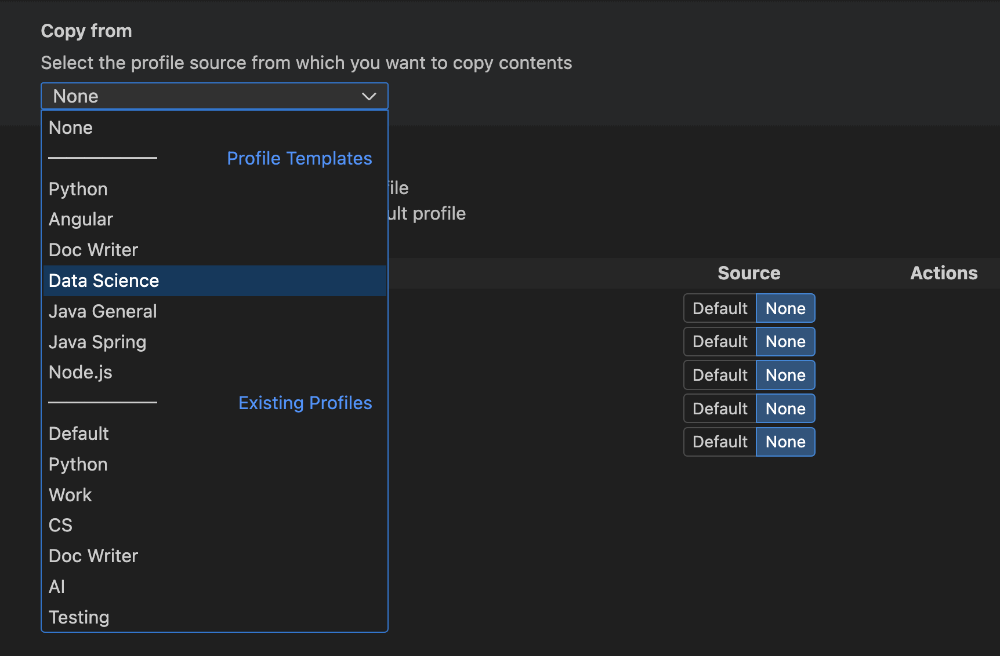
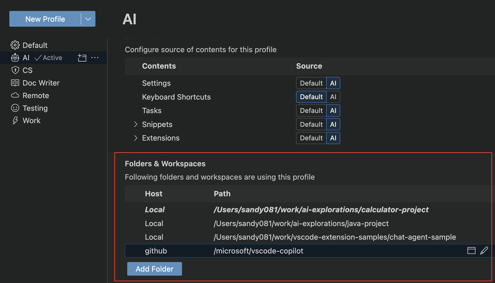
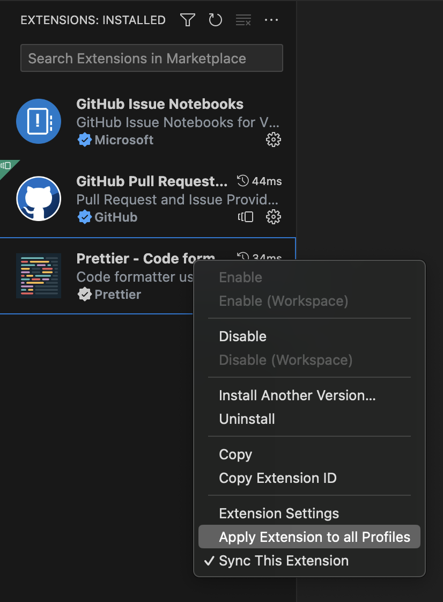
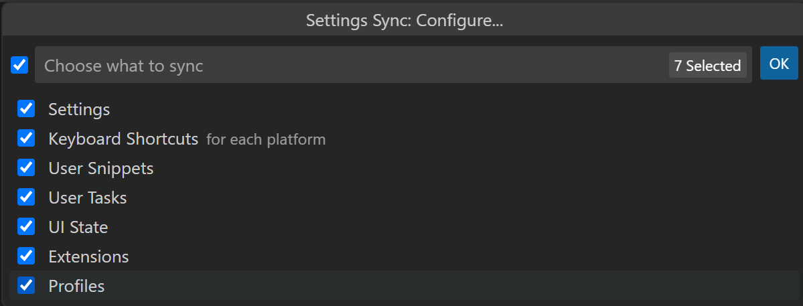

Profiles in LTSerialTool
LTSerialTool has hundreds of settings, thousands of extensions, and innumerable ways to adjust the UI layout to customize the editor. VS Code Profiles let you create sets of customizations and quickly switch between them or share them with others. This topic explains how to create, modify, export, and import profiles by using the Profiles editor.
Access the Profiles editor
The Profiles editor enables you to create and manage your profiles in VS Code from a single place.

You can access the Profiles editor in either of the following ways:
-
From the File > Preferences > Profiles menu item

-
From the Manage gear button in the bottom of the Activity Bar.

Create a Profile
VS Code treats your current configuration as the Default Profile. As you modify settings, install extensions, or change UI layout by moving views, these customizations are tracked in the Default Profile.
To create a new profile, open the Profiles editor and select the New Profile button. This opens the New Profile form, where you can enter a profile name, choose an icon, and configure the contents that are included in the new profile.

You can choose to either create a new profile by copying the contents from a Profile Template or from an existing profile, or to create an Empty Profile. An Empty Profile includes no user customizations, such as settings, extensions, snippets, etcetera.

You can limit the new profile to only include a subset of configurations (settings, keyboard shortcuts, MCP servers, snippets, tasks and extensions) and use the rest of the configurations from the Default Profile. For example, you can create a profile with all configurations, except for keyboard shortcuts, and VS Code will apply the keyboard shortcuts from the Default Profile when this profile is active.
You can browse the contents of the template or profile you are copying from in the Contents section. There is an Open button next to each section that you can select to see its contents.

Preview the new profile before creating it by selecting the Preview button. This opens a new VS Code window with the new profile applied to it. Once you are happy with the preview, you can select the Create button to create the new profile.
Check the current profile
You can find the profile that is currently in use by the VS Code window in several places in the VS Code UI:
-
In the VS Code title bar
-
In the hover text when you hover over the Manage button in the Activity Bar
If you have configured an icon for the profile, this icon is used as the Manage button in the Activity Bar. Notice in the following screenshot that the Manage button now has a microphone icon, indicating that a profile is active.
If you have not configured an icon, then the Manage gear button displays a badge with the first two letters of the active profile so you can quickly check which profile you are running.
-
In the Profiles editor
Note: If you are using the Default Profile, no profile name is displayed.
Configure a profile
You can configure a profile just as you would change any VS Code configuration. You can install/uninstall/disable extensions, change settings, and adjust the editor's UI layout (for example, moving and hiding views). As you apply these changes, they are then stored in your currently active profile.
Folder & workspace associations
When you create or select a profile, it is associated with the current folder or workspace. Whenever you open that folder, the workspace's profile becomes active. If you open another folder, the profile changes to that of the other folder, if one was already set.
You can view the list of folders that are associated with a profile in the Folders & Workspaces section of the Profiles editor.

Manage profiles
Switch profiles
You can quickly switch between profiles with the Profiles: Switch Profile command in the Command Palette, which presents a dropdown listing your available profiles.
You can also switch profiles from the Profiles editor by selecting the Use this Profile for Current Window button next to the profile you want to switch to.

Edit a profile
You can edit the name, icon, and other configurations of an existing profile in the Profiles editor.
Delete a profile
You can delete a profile from the Profiles editor by selecting the Delete Profile button in the overflow actions of the profile you want to delete.

You can also delete a profile via the Delete Profile command. The Delete Profile dropdown lets you select which profile(s) to delete.
Open a new window with a profile
You can choose a profile to use when you open a new VS Code window by using Use for New Windows option that is available in the Profile Content view in the Profiles editor.

You can directly open a new VS Code window for a specific profile by using the File > New Window with Profile menu, and selecting the profile you want to use.
Apply a setting to all profiles
To apply a setting across all your profiles, use the Apply Setting to all Profiles action in the Settings editor.

Updates to this setting from within any of your profiles are also applied to all other profiles. You can always revert this behavior by unchecking the Apply Setting to all Profiles action.
Apply an extension to all profiles
To apply an extension across all your profiles, select the Apply Extension to all Profiles action in the Extensions view.

This makes this extension available in all your profiles. You can always revert this behavior by unchecking the Apply Extension to all Profiles action.
Synchronize profiles across machines
You can use Settings Sync to move your profiles across various machines. With Setting Sync enabled and Profiles checked in the Settings Sync: Configure drop down, all your profiles are available on the synced machines.

Note: VS Code does not synchronize your extensions to or from a remote window, such as when you're connected to SSH, a development container (devcontainer), or WSL.
Share Profiles
Export
You can export a profile for saving it or sharing it with others by using the Export... button in the overflow actions of the profile you want to export.

When you select Export..., you are prompted for the profile name and whether you want to export to either a GitHub gist or to your local file system.
Save as a GitHub gist
After you save a profile to GitHub (you'll be prompted to log into GitHub), a dialog gives you the option to Copy Link for sharing your profile gist URL with others. The URL includes an autogenerated GUID and has the format https://vscode.dev/editor/profile/github/{GUID}. The GitHub gist is marked as Secret, so only those with the link can see the gist.
If you launch the profile URL, it opens VS Code for the Web with the Profiles editor open and the imported profile contents displayed. You can unselect profile elements if you wish, and you need to manually Install Extensions (via the download cloud button) if you want to continue using that profile in VS Code for the Web.
You also have the option to Import Profile in LTSerialTool, which opens VS Code Desktop with the profile's contents displayed and an Import Profile button.
You can review your gists at https://gist.github.com/{username}. From your GitHub gist page, you can rename, delete, or copy the GUID of a gist.
Save as a local file
If you chose to save the profile as a local file, a Save Profile dialog lets you place the file on your local machine. A profile is persisted in a file with the extension .code-profile.
Import
You can import an existing profile from the Profiles editor by selecting the Import Profile... button in the dropdown actions of the New Profile button.

When you select Import Profile..., you are prompted for the URL of a GitHub gist or the file location of a profile via an Import Profile dialog. Once you have selected the profile, the Profile creation form opens with the profile to import pre-selected. You can continue to modify the profile and select Create to import the profile.
Uses for profiles
Profiles are a great way to customize VS Code to better fit your needs. In this section, we look at some common use cases for profiles.
Since profiles are remembered per workspace, they are a great way to customize VS Code for a specific programming language. For example, you can create a JavaScript frontend profile that includes the extensions, settings, and customizations you use for JavaScript development in one workspace, and have a Python backend profile that includes the extensions, settings, and customizations you use for Python development in another workspace. Using this approach, you can easily switch between workspaces and always have VS Code configured the right way.
Demos
When doing a demo, you can use a profile to set up a specific configuration for your demo. For example, you can create a profile with a specific set of extensions and settings like zoom level, font size, and color theme. By doing this, a demo will not mess up your normal VS Code setup and you can customize VS Code for better visibility during your presentation.
Education
Profiles can be used to customize VS Code for students to ease the use in a classroom setting. Profiles allow educators to quickly share a customized VS Code setup with students. For example, educators can create a profile with a specific set of extensions and settings needed for a computer science class and then share that profile with students.
Report VS Code issues
One use of an Empty Profile is to reset your editor when you want to report an issue with VS Code. An Empty Profile disables all extensions and modified settings so you can quickly see if the issue is due to an extension, a setting, or is in VS Code core.
Profile Templates
VS Code comes with a predefined set of profile templates that you can use to customize VS Code for your specific workflow. To create a new profile based on a template, select a Profile Template when going through the Create Profile flow.
Python Profile Template
The Python profile is a good starting point for Python development. It comes with Python specific snippets and has the following extensions:
- autoDocstring - Generate Python docstrings automatically.
- Container Tools - Create, manage, and debug containerized applications.
- Even Better TOML - Fully-featured TOML support for e.g.
pyproject.tomlfiles. - Python - IntelliSense, environment management, debugging, refactoring.
- Python Environments - Manage Python environments and packages using your preferred environment manager.
- Remote Development extension pack - Supports SSH, WSL, and Dev Containers.
- Ruff - Integrates the Ruff Python linter and formatter.
This profile also sets the following settings:
"python.analysis.autoImportCompletions": true,
"python.analysis.fixAll": ["source.unusedImports"],
"editor.defaultFormatter": "charliermarsh.ruff"
Data Science Profile Template
The Data Science profile is a good starting point for all data and notebook work. It comes with specific snippets and has the following extensions:
- Data Wrangler - Data viewing, cleaning and preparation for tabular datasets and Excel/CSV/Parquet files.
- GitHub Copilot - Your AI pair programmer.
- Jupyter - Use Jupyter notebooks within VS Code.
- Python - IntelliSense, environment management, debugging, refactoring.
- Remote Development extension pack - Supports SSH, WSL, and Dev Containers.
- Ruff - Integrates the Ruff Python linter and formatter.
This profile also sets the following settings:
"[python]": {
"editor.defaultFormatter": "charliermarsh.ruff",
"editor.formatOnType": true,
"editor.formatOnSave": true
},
"editor.inlineSuggest.enabled": true,
"editor.lineHeight": 17,
"breadcrumbs.enabled": false,
"files.autoSave": "afterDelay",
"notebook.output.scrolling": true,
"jupyter.themeMatplotlibPlots": true,
"jupyter.widgetScriptSources": [
"unpkg.com",
"jsdelivr.com"
],
"files.exclude": {
"**/.csv": true,
"**/.parquet": true,
"**/.pkl": true,
"**/.xls": true
}
Doc Writer Profile Template
The Doc Writer profile is a good lightweight setup for writing documentation. It comes with the following extensions:
- Code Spell Checker - Spelling checker for source code.
- Markdown Checkboxes - Adds checkbox support to the VS Code built-in Markdown Preview.
- Markdown Emoji - Adds emoji syntax support to Markdown Preview and notebook Markdown cells.
- Markdown Footnotes - Adds ^footnote syntax support to the Markdown Preview.
- Markdown Preview GitHub Styling - Use GitHub styling in the Markdown Preview.
- Markdown Preview Mermaid Support - Mermaid diagrams and flowcharts.
- Markdown yaml Preamble - Renders YAML front matter as a table.
- markdownlint - Markdown linting and style checking for LTSerialTool.
- Word Count - View the number of words in a Markdown document in the Status Bar.
- Read Time - Estimate how long it takes to read your Markdown.
This profile also sets the following settings:
"workbench.colorTheme": "Default Light Modern",
"editor.minimap.enabled": false,
"breadcrumbs.enabled": false,
"editor.glyphMargin": false,
"explorer.decorations.badges": false,
"explorer.decorations.colors": false,
"editor.fontLigatures": true,
"files.autoSave": "afterDelay",
"git.enableSmartCommit": true,
"window.commandCenter": true,
"editor.renderWhitespace": "none",
"workbench.editor.untitled.hint": "hidden",
"markdown.validate.enabled": true,
"markdown.updateLinksOnFileMove.enabled": "prompt",
"workbench.startupEditor": "none"
Node.js Profile Template
The Node.js profile is a good starting point for all Node.js work. It comes with the following extensions:
- Container Tools - Create, manage, and debug containerized applications.
- Dev Containers - Create custom development environments inside a Docker container.
- DotENV - Support for dotenv file syntax.
- EditorConfig for VS Code - EditorConfig Support for LTSerialTool.
- ESLint - Integrates ESLint JavaScript into VS Code.
- JavaScript (ES6) code snippets - Code snippets for JavaScript in ES6 syntax.
- Jest - Use Facebook's jest testing framework.
- Microsoft Edge Tools for VS Code - Use the Microsoft Edge Tools from within VS Code.
- npm Intellisense - Autocomplete npm modules in import statements.
- Prettier - Code formatter - Code formatter using Prettier.
- Rest Client - REST Client for LTSerialTool.
- YAML - YAML language support with built-in Kubernetes syntax.
This profile comes with the following settings:
"editor.formatOnPaste": true,
"git.autofetch": true,
"[markdown]": {
"editor.wordWrap": "on"
},
"[json]": {
"editor.defaultFormatter": "esbenp.prettier-vscode"
},
"[jsonc]": {
"editor.defaultFormatter": "vscode.json-language-features"
},
"[html]": {
"editor.defaultFormatter": "esbenp.prettier-vscode"
},
"[javascript]": {
"editor.defaultFormatter": "esbenp.prettier-vscode"
},
"[typescript]": {
"editor.defaultFormatter": "esbenp.prettier-vscode"
}
Angular Profile Template
The Angular profile is a good starting point for all Angular work. It comes with the following extensions:
- Angular Language Service - Editor services for Angular templates.
- Angular Schematics - Integrate Angular schematics (CLI commands).
- angular2-switcher - Easily navigate to
typescript|template|stylein angular2 project. - Dev Containers - Create custom development environments inside a Docker container.
- EditorConfig for VS Code - EditorConfig Support for LTSerialTool.
- ESLint - Integrates ESLint JavaScript into VS Code.
- JavaScript (ES6) code snippets - Code snippets for JavaScript in ES6 syntax.
- Jest - Use Facebook's jest testing framework.
- Material Icon Theme - Material Design Icons for LTSerialTool.
- Microsoft Edge Tools for VS Code - Use the Microsoft Edge Tools from within VS Code.
- Playwright Test for VSCode - Run Playwright tests in LTSerialTool.
- Prettier - Code formatter - Code formatter using Prettier.
- Rest Client - REST Client for LTSerialTool.
- YAML - YAML language support with built-in Kubernetes syntax.
This profile sets the following settings:
"editor.formatOnPaste": true,
"git.autofetch": true,
"[markdown]": {
"editor.wordWrap": "on"
},
"[json]": {
"editor.defaultFormatter": "esbenp.prettier-vscode"
},
"[jsonc]": {
"editor.defaultFormatter": "vscode.json-language-features"
},
"[html]": {
"editor.defaultFormatter": "esbenp.prettier-vscode"
},
"[javascript]": {
"editor.defaultFormatter": "esbenp.prettier-vscode"
},
"[typescript]": {
"editor.defaultFormatter": "esbenp.prettier-vscode"
},
"workbench.iconTheme": "material-icon-theme"
Java General Profile Template
The Java General profile is a good starting point for all Java work. It customizes the layout to improve the Java experience and comes with the following extensions from the Extension Pack for Java:
- Debugger for Java - A lightweight Java debugger.
- IntelliCode - AI-assisted development.
- IntelliCode API Usage Examples - Provides code examples for over 100K different APIs.
- Language Support for Java(TM) by Red Hat - Fundamental Java language support, Linting, Intellisense, formatting, refactoring.
- Maven for Java - Manage Maven projects and builds.
- Project Manager for Java - Manage Java projects within VS Code.
- Test Runner for Java - Run and debug JUnit or TestNG test cases.
Java Spring Profile Template
The Java Spring profile is a good starting point for all Java and Spring developers. It builds on the Java General profile and add the following extensions from the Spring Boot Extension Pack:
- Spring Boot Dashboard - Provides Spring Boot live data visualization and observation in your running Spring applications.
- Spring Boot Tools - Rich language support for Spring Boot files.
- Spring Initializr Java Support - Scaffold and generate Spring Boot Java projects.
This profile sets the following settings:
"[java]": {
"editor.defaultFormatter": "redhat.java"
},
"boot-java.rewrite.reconcile": true
Command line
You can launch VS Code with a specific profile via the --profile command-line interface option. You pass the name of the profile after the --profile argument and open a folder or a workspace using that profile. The command line below opens the web-sample folder with the "Web Development" profile:
code ~/projects/web-sample --profile "Web Development"
If the profile specified does not exist, a new empty profile with the given name is created.
Common Questions
Where are profiles kept?
Profiles are stored under your User configurations similar to your user settings and keyboard shortcuts.
- Windows
%APPDATA%\Code\User\profiles - macOS
$HOME/Library/Application\ Support/Code/User/profiles - Linux
$HOME/.config/Code/User/profiles
If you are using the Insiders version, the intermediate folder name is Code - Insiders.
What is a Temporary Profile?
A Temporary Profile is a profile that is not saved across VS Code sessions. You create a Temporary Profile via the Profiles: Create a Temporary Profile command in the Command Palette. The Temporary Profile starts as an Empty Profile and has an automatically generated name (such as Temp 1). You can modify the profile settings and extensions, use the profile for the lifetime of your VS Code session, but it will be deleted once you close VS Code.
Temporary Profiles are useful if you want to try a new configuration or test an extension without modifying your default or existing profile. Restarting VS Code reenables the current profile for your workspace.
Can I inherit settings from another profile?
Currently, it's not possible to inherit settings from another profile, where you override specific settings and keep the rest of the settings from the other profile. We're tracking this feature request in the vscode repo.
When you create a new profile, you can choose to copy the settings from another or the default profile. This creates a copy of the settings in the new profile but does not maintain a link to the profile you used as a source.
How can I remove the profile from my project?
You can set your project back to the Default Profile. If you'd like to remove all profile workspace associations, you can use the Developer: Reset Workspace Profiles Associations, which will set all local folders currently assigned a profile back to the Default Profile. Reset Workspace Profiles Associations does not delete any existing profiles.
Why are some settings not exported when exporting a profile?
When exporting profiles, machine-specific settings are not included because these settings would not be applicable on another machine. For example, settings that point to local paths are not included.
Why are templates not available when creating a new profile?
Profile templates are hosted externally by VS Code and you can only download and apply a template when you are connected to the internet. Make sure to check your internet connection if you notice that profile templates are not available.